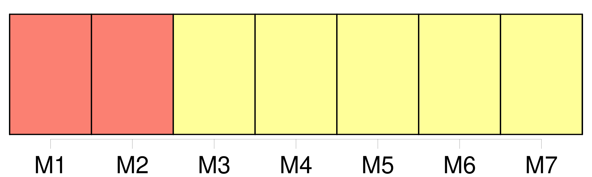
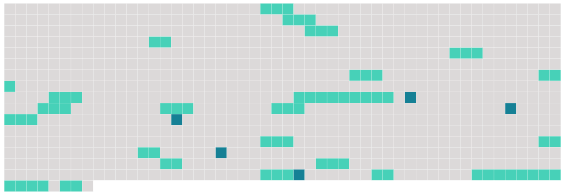

Longueur nb maillons : 27 mentions |
 |
a ) Sur requête adressée par une partie contractante à une autre partie contractante en application du paragraphe 1, il est constitué [un tribunal arbitral] [1 phrases] b ) La partie requérante informe la Commission du fait qu'elle a demandé la constitution d' [un tribunal arbitral] , du nom de l'autre partie au différend ainsi que des articles de la convention dont l'interprétation ou l'application sont à son avis l'objet du différend. [2 phrases] [Le tribunal arbitral] est composé de trois membres : chacune des parties au différend nomme un arbitre ; les deux arbitres ainsi nommés désignent d'un commun accord le troisième arbitre, qui assume la présidence [du tribunal] [2 phrases]
a ) Si, dans un délai de deux mois après la nomination du deuxième arbitre, le président [du tribunal arbitral] n'est pas désigné, le président de la Cour internationale de justice procède, à la. requête de la partie la plus diligente, à sa désignation dans un nouveau délai de deux mois. b ) Si, dans un délai de deux mois après la réception de la requête, l'une des parties au différend ne procède pas à la nomination d'un arbitre, l'autre partie peut saisir le président de la Cour internationale de justice, qui désigne le président [du tribunal arbitral] dans un nouveau délai de deux mois. Dès sa désignation, le président [du tribunal arbitral] demande à la partie qui n'a pas nommé d'arbitre de le faire dans un délai de deux mois. [2 phrases]
a ) [Le tribunal arbitral] décide selon les règles du droit international, et, en particulier, de la convention.
b ) [Tout tribunal arbitral constitué aux termes du présent article] établit [ses] propres règles de procédure.
c ) Dans l'éventualité d'un différend sur la compétence [du tribunal arbitral] , la question est tranchée par une décision [du tribunal arbitral] [1 phrases]
a ) Les décisions [du tribunal arbitral] , tant sur la procédure que sur le fond, sont prises à la majorité des voix de [ses] membres. b ) [Le tribunal arbitral] peut prendre toutes les mesures appropriées afin d'établir les faits.
[Il] peut, à la demande d'une des parties, recommander les mesures conservatoires indispensables. [4 phrases] Sauf si [le tribunal arbitral] en décide autrement en raison des circonstances appropriées à l'affaire, les frais de justice, notamment la rémunération des membres [du tribunal] , sont assumés à parts égales par les parties au différend.
[Le tribunal] tient un registre de toutes [ses] dépenses, et remet un état final de celles -ci aux parties. [1 phrases]
Toute partie contractante ayant un intérêt juridique à l'objet du différend susceptible d'être affecté par la décision prise dans l'affaire, peut, avec le consentement [du tribunal] , intervenir dans la procédure. [1 phrases] a ) La sentence [du tribunal arbitral] est motivée. [1 phrases]
b ) Tout différend qui pourrait surgir entre les parties concernant l'interprétation ou l'exécution de la sentence peut être soumis par la partie la plus diligente [au tribunal arbitral] [qui] l'a rendue ou, si [ce dernier] ne peut en être saisi, à [un autre tribunal arbitral constitué à cet effet de la même manière] que [le premier] |
 |
Il est possible de télécharger la ressource sur la page Ortolang |
Si vous avez des questions ou vous voyez des erreurs, merci d'envoyer un mail à silvia.federzoni89@gmail.com |